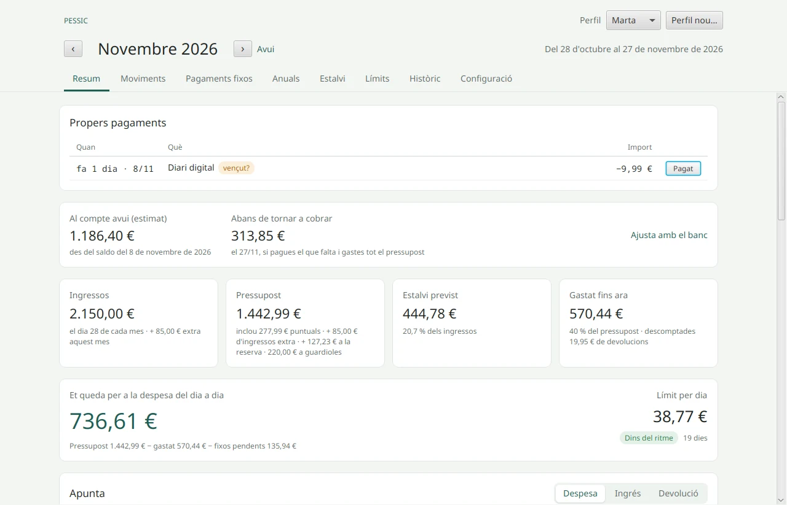
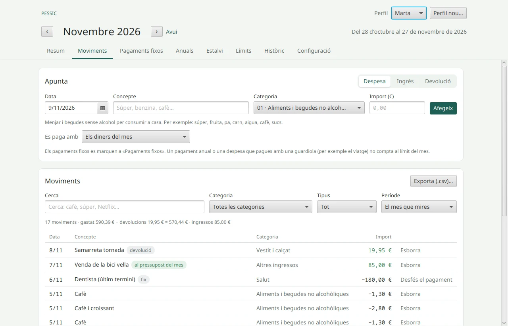
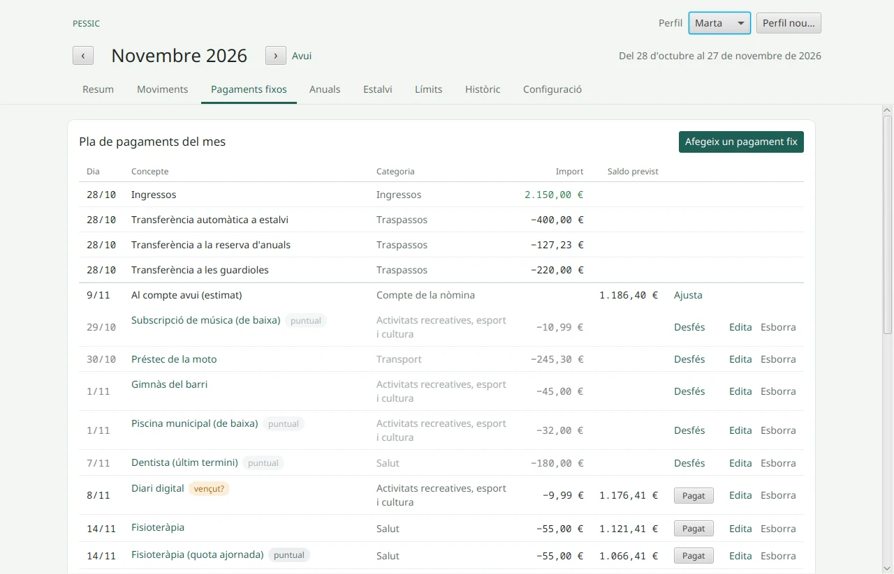
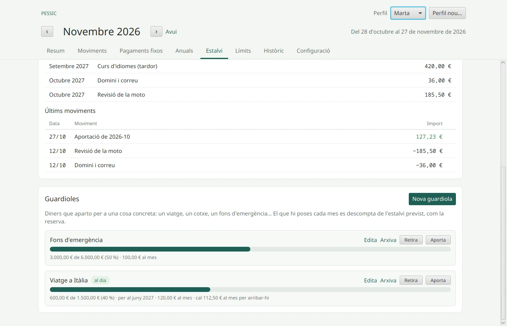
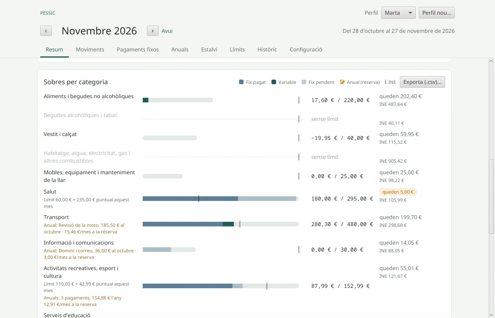
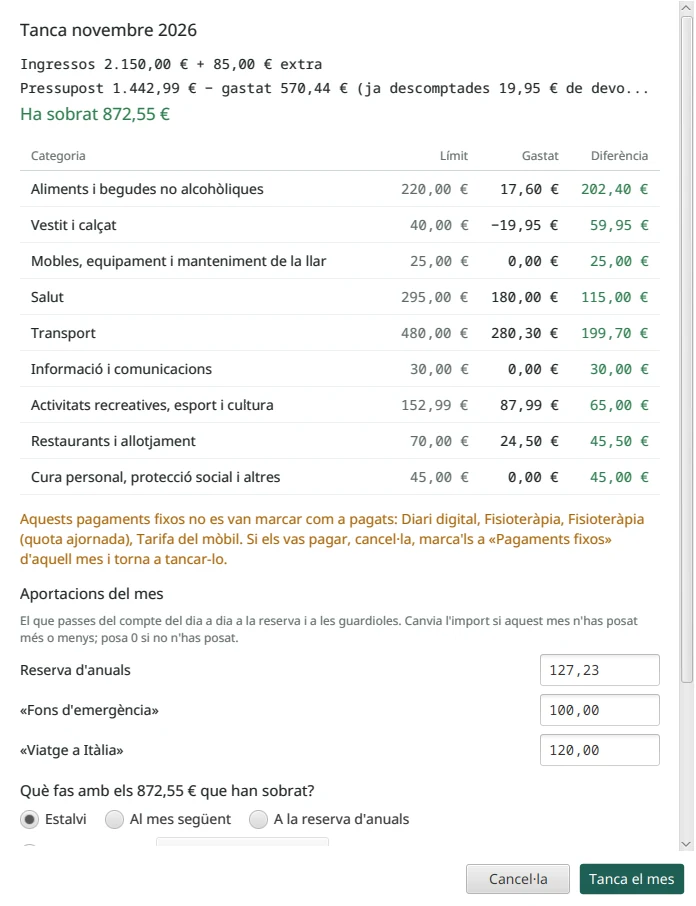

El mes comença el dia que cobres
Si cobres el 28, el teu mes va del 28 fins al 27 del mes següent. Així el pressupost segueix els teus diners de veritat, no el calendari.
Pressupost mensual per a l'ordinador
Pessic t'ajuda a fer un pressupost cada mes i a complir-lo. Decideixes quant vols gastar en cada cosa, apuntes el que gastes i veus cada dia quant et queda.
Per a Windows, macOS i Linux · Sense registre · En català

Les idees bàsiques
Si cobres el 28, el teu mes va del 28 fins al 27 del mes següent. Així el pressupost segueix els teus diners de veritat, no el calendari.
Alimentació, transport, oci… Cada categoria té un límit. Quan apuntes una despesa, surt del seu sobre, i veus què et queda a cadascun.
El que queda per sota dels ingressos, després de l'estalvi automàtic i del que apartes, és el teu estalvi previst. Pessic te'l mostra des del primer dia.
lloguer, llum, gimnàs, préstec
Es repeteix cada mes. El marques com a Pagat quan surt del compte.
assegurança, IBI, matrícula
Un cop l'any. Pessic calcula quant has d'apartar cada mes a la reserva d'anuals, i el dia que toca el pagues amb la reserva, no amb els diners del mes.
súper, benzina, cafè, sopars
El que apuntes cada dia. És aquí on se'n van els diners sense adonar-te'n.
Què fa Pessic
Data, concepte, categoria i import, i ja està. El mateix requadre serveix per a tres coses:
El sou no s'apunta: Pessic ja el compta el dia que cobres.

Digues una vegada quant tens al compte on cobres la nòmina i Pessic farà la resta: hi suma la nòmina i hi resta el que apuntes.

L'assegurança, l'IBI o la matrícula ja no et trenquen el mes. Pessic reparteix cada pagament anual en dotze mesos i et diu quant has d'apartar.

Les 13 categories són les que fa servir l'INE (COICOP 2018). Al costat de cada sobre veus el que gasten de mitjana les llars semblants a la teva: mateix tipus de llar, membres i ingressos.

Quan acaba el mes, Pessic t'ho recorda. En tancar-lo:
A l'Històric veus els teus mesos en un gràfic: ingressos, gastat, apartat i estalvi, i cada categoria comparada amb el seu límit.

Com començar
Agafa els rebuts del banc i deixa-ho a punt. Després, només cal apuntar.
Nom, ingressos nets, el dia que cobres, el tipus de llar i si cobres 12 o 14 pagues. Si vols, Pessic et proposa els límits segons el que gasten les llars com la teva.
Lloguer, llum, mòbil, gimnàs, préstecs… i, a part, els d'un cop l'any. Pessic calcula quant cal apartar cada mes.
Quant vols gastar en cada categoria, amb els fixos inclosos. Al costat tens la mitjana de l'INE.
Mira el saldo a l'app del banc i escriu-lo. Des d'aquí, Pessic et dirà quant et queda cada dia.
Les regles del mes
Les pantalles
Totes les dades d'aquestes captures són inventades.
La foto del mes: avisos, saldo del compte, xifres clau, el formulari Apunta, els sobres, el límit setmanal i les regles del mes.
Tot el que has apuntat, amb cerca per text, categoria, tipus i període, i els totals a sota.
El pla de pagaments del mes, amb el saldo previst al compte després de cada pagament.
Els pagaments d'un cop l'any, el total anual i quant has d'apartar cada mes.
La reserva d'anuals amb el seu saldo i els pròxims anuals, i les guardioles amb el seu progrés.
El límit de cada categoria al costat de la previsió de l'INE per a llars com la teva.
Els teus mesos, tancats o estimats: ingressos, gastat, apartat i estalvi.
Preguntes freqüents
Al teu ordinador, i enlloc més. Pessic no té servidor, no et demana compte i funciona sense internet. Cada dia que l'obres en fa una còpia de seguretat i en guarda les 10 últimes.
No, i és a propòsit. Pessic serveix per fer un pressupost i complir-lo, no per analitzar el compte. Només necessita saber el saldo del compte on cobres, i això li dius tu. Si el banc no quadra, prem Ajusta amb el banc.
Com a estalvi automàtic a Configuració (si surt el dia que cobres), o com a pagament fix d'aquell dia. Pessic no necessita saber què passa en aquell compte.
Si tens 14 pagues configurades, prem Rebuda quan surti a Propers pagaments. Si no, apunta-la com a Ingrés. En tots dos casos tries on va: el pressupost del mes, la reserva, una guardiola o l'estalvi.
Apunta una Devolució a la mateixa categoria: abaixa el que hi has gastat.
No passa res: tanca el mes igualment i el mes següent revisa els límits. Pessic serveix per veure on se'n van els diners, no per renyar-te.
Canvia-ho a Configuració. Els canvis de sou o de pagues només afecten d'ara endavant, i si canvies el dia que cobres, els moviments es reparteixen sols en els mesos nous.
No se sincronitza sol. Exporta una còpia (.json) en un ordinador i importa-la a l'altre.
Tens més dubtes? Llegeix el manual d'ús complet.
Descarrega
Tria el teu sistema.
| Windows | %APPDATA%\Pessic\ |
|---|---|
| macOS | ~/Library/Application Support/Pessic/ |
| Linux | ~/.local/share/pessic/ |
Després d'instal·lar-lo, llegeix com crear el perfil i com deixar-ho a punt. De tant en tant, exporta una còpia (.json) i guarda-la al núvol o en un altre disc.